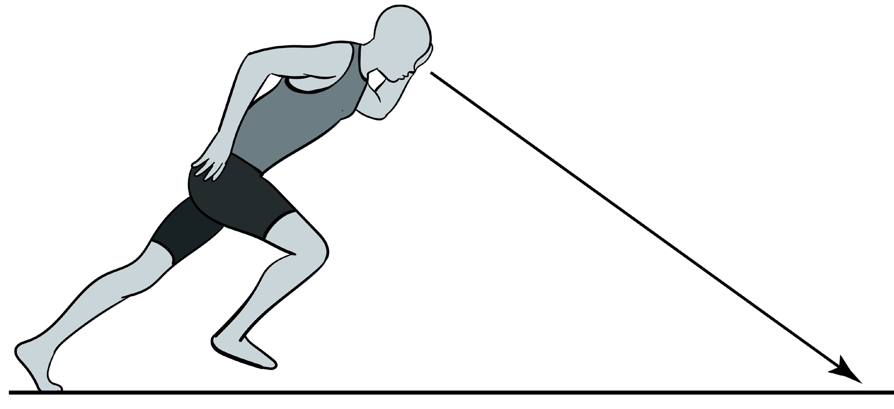

Maximum speed
This is the highest possible sprinting speed that an athlete can achieve. In this phase, the stride length and stride frequency increase continuously. This phase begins with full block clearance and ends when there is no further positive change in velocity.
Maintaining speed
This phase begins when there is no further positive change in velocity as an athlete approaches to finish the race. The stride length and frequency will contribute to maximum velocity. Maintaining momentum in this section will determine the possibility of winning the race.
Finishing phase
The final 2–4 strides are last phase to which the clock stops when the trunk of the body passes the finish line. The athlete leans forward with the shoulders or chest a few feet
SPORTS STUDIES FORM ONE.indd 67
05/12/2024 13:17:50
Practise proper acceleration in sprints.
What is the essence of maintaining low body position during acceleration phase?